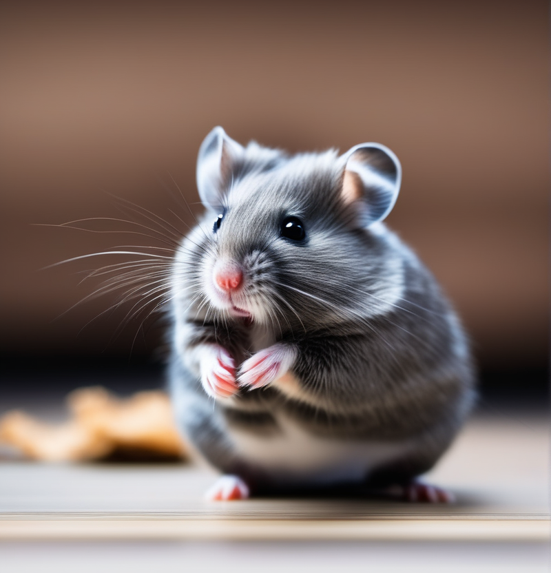

|  |
En la actualidad, los hámsters son una de las opciones más populares como mascotas pequeñas, con varias razas seleccionadas y criadas para convertirse en compañeros encantadores. Estos roedores de tamaño compacto han cautivado a dueños de mascotas con su comportamiento juguetón, sus mejillas regordetas y su capacidad para adaptarse a entornos cerrados.
Los hámsters poseen sentidos agudos que les permiten sobrevivir y prosperar en la naturaleza. Su sentido del olfato es particularmente fuerte, ayudándoles a explorar su entorno y detectar alimentos. Además, su naturaleza nocturna los hace activos durante la noche, convirtiéndolos en mascotas fascinantes para observar durante las horas de oscuridad. Aunque su tamaño pueda sugerir lo contrario, los hámsters son animales inteligentes y curiosos. Pueden aprender a reconocer a sus dueños y, a menudo, muestran comportamientos divertidos, como almacenar alimentos en sus mejillas o construir nidos elaborados con materiales proporcionados.